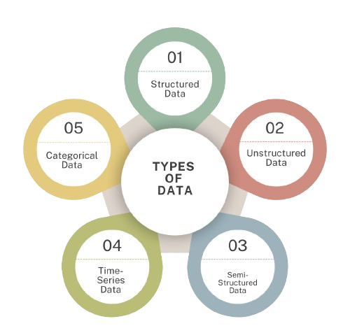
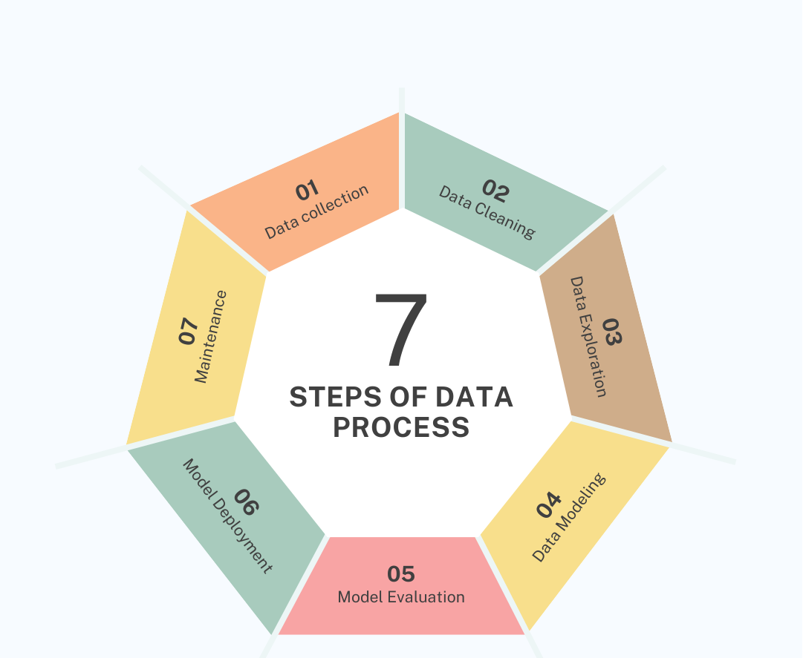

Data Science Tutorial
Data Science is an interdisciplinary field that focuses on extracting meaningful insights from structured and unstructured data using scientific methods, algorithms, and machine learning techniques. Our Data Science tutorial covers fundamental and advanced concepts, including data collection, data cleaning, exploratory data analysis, feature engineering, statistical modeling, machine learning, deep learning, and data visualization. This tutorial is designed for both beginners and professionals working in the industry.
In the early 21st century, the rise of big data led to the emergence of Data Science as a critical field. With the ability to process vast amounts of data, Data Science has become essential in industries ranging from finance to healthcare. Today, Data Science is one of the most in-demand fields, offering significant career opportunities for data professionals.
What is Data Science
Data Science is the process of using data to find useful information. It combines math, statistics, and computer techniques to analyze large amounts of data and make decisions. Data Science helps businesses and organizations solve problems and predict future trends.
As data grows, Data Science has become an important field, used in areas like healthcare, finance, and technology. It offers exciting job opportunities for people who want to work with data and technology.
Features of Data Science:
1. Data Handling and Management: Data Science involves managing vast amounts of structured and unstructured data from various sources such as databases, files, or online streams. The ability to clean, store, and organize this data effectively is crucial for further analysis. Data engineers play a key role in ensuring that data is accessible and in the right format for Data Scientists to use in their models.
2. Statistical Analysis: A core aspect of Data Science is using statistical methods to extract insights from data. Statistical analysis helps in understanding trends, correlations, and patterns in data. These insights can help businesses make data-driven decisions and optimize operations. The use of probability and hypothesis testing also ensures that conclusions drawn from the data are reliable and valid.
3. Machine Learning: Machine learning is one of the most important features of Data Science. It involves training algorithms to learn from data and make predictions or decisions without being explicitly programmed. From recommendation systems to fraud detection, machine learning helps automate processes and provides accurate results. Data Scientists work with algorithms such as decision trees, SVM, and neural networks.
4. Predictive Analytics: Predictive analytics focuses on using historical data to make forecasts about future outcomes. This is widely used in fields like finance, marketing, and healthcare to predict trends, risks, or customer behaviors . Data Science models like regression, time series analysis, and machine learning algorithms help make these predictions based on past data and current conditions.
5. Data Visualization: Data visualization allows complex data insights to be presented in a simple and visually appealing way. Using graphs, charts, and dashboards, Data Scientists can communicate their findings clearly to both technical and non-technical audiences. Tools like Matplotlib, Seaborn, and Tableau are used to create compelling visual stories that help stakeholders make informed decisions.
6. Big Data Processing: With the rise of big data, Data Science has evolved to handle massive amounts of data efficiently. Using technologies like Hadoop, Spark, and distributed computing , Data Scientists can process terabytes and petabytes of data. Big data solutions are essential for companies dealing with vast quantities of data, such as social media platforms, e-commerce sites, or financial institutions.
7. Business Intelligence Integration: Data Science is closely integrated with business intelligence (BI). It helps businesses extract actionable insights from data, allowing them to make strategic decisions based on real-time information. Data Science tools work in tandem with BI platforms like Power BI and Tableau to ensure that data-driven insights are aligned with business objectives, helping optimize performance.

Featues of Data Science
Types of Data in Data Science
1. Structured Data: Structured data is highly organized and easy to analyze. It is usually stored in tabular form, like in spreadsheets or databases. Each row represents a data entry, and each column represents a specific attribute. For example, in a table of customer data, rows may represent individual customers, while columns represent their name, age, address, and purchase history. Structured data is ideal for working with SQL databases.
2. Unstructured Data: Unstructured data doesn’t follow a predefined format. This includes data like images, videos, social media posts, and emails. For instance, a photo or a video uploaded to a social media platform is unstructured data because it cannot be easily organized into rows and columns. Since this data is not in a structured format, it requires more advanced techniques to analyze, such as using machine learning or natural language processing.
3. Semi-Structured Data: Semi-structured data is a mix between structured and unstructured data. It does not have a strict tabular format but still contains tags or markers that separate different elements of the data. An example of semi-structured data is a JSON or XML file. These files contain data in a hierarchy, but not every entry has to have the same structure, making it flexible yet somewhat organized.
4. Time-Series Data: Time-series data is a type of structured data that tracks events or values over time. Examples include stock prices, weather data, or heart rate readings, where each value is associated with a specific timestamp. Analyzing this data can help identify trends or patterns over a period, such as the rise and fall of a company's stock over months or years.
5. Categorical Data: Categorical data represents groups or categories and doesn’t have numerical value. Examples include gender (male, female), colors (red, green, blue), or product types (electronics, clothing, furniture). This type of data is typically used in classification models where labels are assigned to different data points.
6. Numerical Data: Numerical data refers to data that is expressed in numbers and can be measured. It can be further divided into two types: - Discrete Data: Numbers that can only take specific values (e.g., number of students in a class). - Continuous Data: Numbers that can take any value within a range (e.g., height or temperature). Numerical data is used for mathematical and statistical calculations to derive insights.
Types of Data
Data Process
1. Data Collection: The first step in the Data Science process is gathering the data. This data can come from various sources like surveys, sensors, websites, or databases. For example, if you are analyzing sales performance, you might collect data from online sales records, customer feedback forms, and social media interactions. The goal here is to collect enough relevant data to work with.
2. Data Cleaning: After collecting the data, the next step is to clean it. Raw data is often messy and incomplete, with missing or duplicate values. For example, if some customers didn’t fill out all the fields in a survey, or if some entries were recorded incorrectly, this data needs to be fixed. Cleaning data ensures it is consistent and ready for analysis, like removing unnecessary columns or fixing errors.
3. Data Exploration (EDA): Exploratory Data Analysis (EDA) helps you understand the data better. This step involves visualizing and summarizing the data to find patterns, trends, or outliers. For example, you might create charts to see if there is a relationship between the amount customers spend and their age group. This helps you identify which variables are important for your analysis and guides the next steps.
4. Data Modeling: In this step, you apply machine learning algorithms to create a model that can predict outcomes or classify data. For instance, if you want to predict future sales, you might use a linear regression model that analyzes past sales data. The model helps you understand how different factors affect your target variable, such as sales or customer behavior.
5. Model Evaluation: After building the model, you need to test how well it works. You evaluate the model's performance using a separate set of data that the model hasn’t seen before. For example, if you built a model to predict house prices, you would test it on new data to see if the predicted prices match the actual prices. This helps you understand the model's accuracy and reliability.
6. Model Deployment: Once you are satisfied with the model's performance, it’s time to deploy it for use. This means putting the model into action, so it can start making predictions or classifications on new data. For example, an e-commerce website might use a recommendation model to suggest products to customers based on their previous purchases. The model is integrated into the website to provide real-time recommendations.
7. Monitoring and Maintenance: After deploying the model, it’s important to monitor its performance over time. Data changes, and models may need updates to maintain their accuracy. For example, if customer preferences change, the recommendation system might need to be adjusted to reflect new trends. This step ensures that the model remains effective in the long run.
Steps of Data Process
Too much Theory? lets have some code
Now, we will se how these Steps that mentioned above look like as in Real
Step 1 Data Collection
# Importing necessary libraries
import pandas as pd
import numpy as np
# Step 1: Data Collection - Simulating data collection by creating a DataFrame
# Example dataset: Sales data
data = {
'CustomerID': [1, 2, 3, 4, 5],
'Age': [25, 34, 22, 45, 30],
'Gender': ['Male', 'Female', 'Female', 'Male', 'Female'],
'Sales': [200, 340, 150, 500, 220],
'Feedback': [4.5, 4.0, np.nan, 5.0, 4.2] # Feedback has some missing values
}
df = pd.DataFrame(data)# Data Frame is a type of data structure to hold the diffrent types of Data
# Display the dataset
print("Data Collection Example:")
print(df)Step 2 Data Cleaning
Cleaning data ensures it is consistent and ready for analysis, like removing unnecessary columns or fixing errors.
# Step 2: Data Cleaning - Handling missing values and data inconsistencies
# Fill missing values in 'Feedback' column with the mean of available feedback
df['Feedback'].fillna(df['Feedback'].mean(), inplace=True)
# Assuming the 'Sales' column should not have negative values (hypothetical cleaning rule)
df['Sales'] = df['Sales'].apply(lambda x: x if x > 0 else np.nan)
# Display the cleaned dataset
print("\nData Cleaning Example:")
print(df)Step 3 Data Exploration
Data Exploration: Helps you understand the data better. This step involves visualizing and summarizing the data to find patterns, trends, or outliers
# Step 3: Data Exploration (EDA) - Summarizing and visualizing the data
import matplotlib.pyplot as plt
# Descriptive statistics of the dataset
print("\nData Exploration (Summary Statistics):")
print(df.describe())
# Visualizing Age vs Sales to see if there's a pattern
plt.scatter(df['Age'], df['Sales'])
plt.title("Sales vs Age")
plt.xlabel("Age")
plt.ylabel("Sales")
plt.show()Data Exploration (Summary Statistics):
CustomerID Age Sales Feedback count 5.000000 5.000000 5.000000 4.000000 mean 3.000000 31.200000 282.000000 4.425000 std 1.581139 9.911047 134.935753 0.396071 min 1.000000 22.000000 150.000000 4.000000 25% 2.000000 25.000000 200.000000 4.150000 50% 3.000000 30.000000 220.000000 4.350000 75% 4.000000 34.000000 340.000000 4.625000 max 5.000000 45.000000 500.000000 5.000000
Step 4 Data Modeling
This Step apply machine learning algorithms to create a model that can predict outcomes or classify data
Note: dont panic if you didn’t get it we will go throgh Each step
# Step 4: Data Modeling - Building a model to predict Sales based on Age
from sklearn.model_selection import train_test_split
from sklearn.linear_model import LinearRegression
# Defining the input (Age) and output (Sales) for the model
X = df[['Age']] # Input variable
y = df['Sales'] # Target variable
# Splitting the data into training and testing sets
X_train, X_test, y_train, y_test = train_test_split(X, y, test_size=0.4, random_state=42)
# Building a linear regression model
model = LinearRegression()
model.fit(X_train, y_train)
# Making predictions
y_pred = model.predict(X_test)
print("\nData Modeling Example - Linear Regression Predictions:")
print("Predicted Sales:", y_pred)
Steps 5 Model Evaluation
You evaluate the model's performance using a separate set of data that the model hasn’t seen before
# Step 5: Model Evaluation - Checking the performance of the model
from sklearn.metrics import r2_score
# Calculating the R-squared score (how well the model fits the data)
r2 = r2_score(y_test, y_pred)
print("\nModel Evaluation Example - R-squared value:")
print(f"R-squared value: {r2:.2f}")
Step 6 Model Deployment
# Step 6: Model Deployment - Simulating deployment by using the model for new predictions
# New customer data (simulated)
new_customer = pd.DataFrame({'Age': [29]})
# Predicting sales for the new customer
predicted_sales = model.predict(new_customer)
# Displaying the predicted sales
print("\nModel Deployment Example - Predicting sales for a new customer (Age=29):")
print(f"Predicted Sales: {predicted_sales[0]:.2f}")
Code for Monitoring and Maintenance Example
# Step 7: Monitoring and Maintenance - Simulating retraining with new data
# New data added (hypothetical future sales data)
new_data = {
'CustomerID': [6],
'Age': [33],
'Gender': ['Male'],
'Sales': [350],
'Feedback': [4.7]
}
# Adding new data to the existing dataset
new_df = pd.DataFrame(new_data)
df = pd.concat([df, new_df], ignore_index=True)
# Retraining the model with the updated dataset
X = df[['Age']]
y = df['Sales']
X_train, X_test, y_train, y_test = train_test_split(X, y, test_size=0.2, random_state=42)
model.fit(X_train, y_train)
# Display the updated dataset
print("\nMonitoring and Maintenance Example - Retrained with new data:")
print(df)
CustomerID Age Gender Sales Feedback 0 1 25 Male 200.0 4.5 1 2 34 Female 340.0 4.0 2 3 22 Female NaN 4.2 3 4 45 Male 500.0 5.0 4 5 30 Female 220.0 4.2 5 6 33 Male 350.0 4.7
This is just a demonstration of how the various steps will work together. It serves as a preview, and if anything is unclear, don't worry—we will discuss each step in detail. This overview is intended to illustrate the overall flow and functionality of the process.